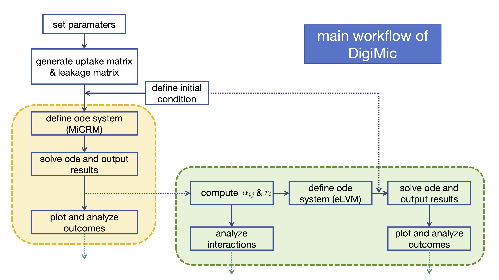

Technical details#

Simulation workflow#
A DigiMic simulation has four main steps:
Choose the number of consumers and resources.
Generate ecological parameters such as uptake preferences and leakage structure.
Define the coupled ODE system for consumer and resource dynamics.
Integrate the system through time and analyse the output.
The package currently keeps these steps explicit rather than hiding them behind a large framework. This makes it easier to modify equations, add drivers, or replace the parameter generator for a particular experiment.
State vector layout#
The ODE solver receives a single state vector y. DigiMic stores the first N entries as consumers and the next M entries as resources:
C = y[:N]
R = y[N:]
This layout is simple but important. Any custom derivative function should return derivatives in the same order:
return np.concatenate([dCdt, dRdt])
Parameter objects#
The core parameter arrays are:
Object |
Shape |
Role |
|---|---|---|
|
|
consumer-resource uptake matrix |
|
|
total leakage fraction per consumed resource |
|
|
maintenance or mortality rates |
|
|
resource input rates |
|
|
resource decay or washout rates |
|
|
consumer-specific leakage tensor |
The current parameter helpers in param.py generate random modular matrices. Since these are stochastic, set np.random.seed(...) when you need exact reproducibility.
Uptake matrix generation#
modular_uptake(N, M, N_modules, s_ratio) starts with a random uptake matrix, boosts entries that fall within matched consumer-resource modules, and then normalises each consumer row. The result is that each consumer’s uptake preferences sum to one, while module membership changes how that uptake is distributed across resources.
This is useful for testing questions such as:
How does niche overlap affect coexistence?
Do strongly modular communities respond differently to perturbation?
Does resource specialisation amplify or dampen cross-feeding effects?
Leakage tensor generation#
generate_l_tensor(N, M, N_modules, s_ratio, λ) creates one leakage matrix per consumer. Each matrix maps consumed resources to leaked resources and each consumed-resource row is normalised to the total leakage fraction λ.
Conceptually, l[i, beta, alpha] is the fraction of resource beta consumed by consumer i that returns to the environment as resource alpha. This is the key object for modelling metabolic by-products and cross-feeding.
Numerical integration#
DigiMic uses scipy.integrate.solve_ivp in the example workflow. This gives access to the standard SciPy ODE solvers while keeping the model equation readable. For larger systems or stiff parameter regimes, users can pass additional solve_ivp options such as method choice, tolerances, or event functions.
Useful checks after integration include:
sol.successandsol.messagefor solver status;minimum values of consumers and resources to detect invalid negative states;
final abundances to identify extinctions or persistent consumers;
trajectory plots to check transient dynamics.
Extending the model#
Because the derivative function is plain Python, the model can be extended without changing the package structure. Common extensions include:
time-varying resource supply
rho(t);temperature- or pH-dependent uptake rates;
species-specific leakage tensors;
immigration or dilution terms;
pulsed perturbations to consumers or resources;
alternative parameter generators fitted to empirical measurements.
When adding extensions, keep the state-vector order and parameter dimensions explicit. Most modelling errors in this type of system come from shape mismatches or inconsistent indexing.